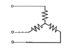
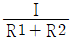
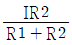
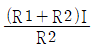
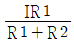
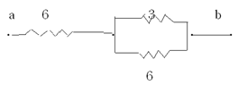
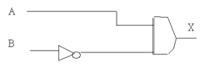
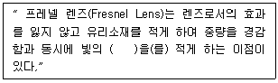

항로표지기사 (2013-08-18 기출문제)
1과목: 항로표지일반
1. 해도도식 중 해저의 지질 종류를 표기한 것으로 내용이 잘못 연결된 것은?
- S – 찰흙
- Sh – 조개껍질
- St – 큰돌
- Wd – 해초
(정답률: 94%)

2. 간출암상에 등표를 설치하고자 할 때 간출암 높이의 기준면은?
- 기본수준면
- 평균수준면
- 평균수면
- 평균 저조면
(정답률: 90%)
3. 해면에 미치는 바람의 변형력으로 일어나는 해류로 해면 근처에서 가장 강하며, 밑으로 내려갈수록 약화되고 200m정도의 깊이에서는 거의 없어지는 해류는?
- 밀도류
- 취송류
- 경사류
- 보류
(정답률: 87%)
4. 국제해상부표식에서 B지역 측방표지의 등색으로 가장 적합한 것은?
- 좌현표지 : 녹색, 우현표지 : 홍색
- 좌현표지 : 백색, 우현표지 : 녹색
- 좌현표지 : 백색, 우현표지 : 홍색
- 좌현표지 : 홍색, 우현표지 : 백색
(정답률: 100%)
5. 해도 도법 중 해도의 어느 부분에서나 주어진 척도로 거리를 잴 수 있어 항박도에 가장 많이 이용되는 도법은?
- 점장도법
- 대권도법
- 평면도법
- 다원추도법
(정답률: 77%)
6. 다음 중 군섬광으로 매 5초에 2섬광의 등질을 가진 항로표지는?
- 측방표지
- 방위표지
- 고립장해표지
- 안전수역표지
(정답률: 93%)
7. AIWR은 어떤 등질의 약기호인가?
- 복합군명암광
- 등명암광
- 호광
- 단명암광
(정답률: 85%)
8. 주간에 사용할 수 있도록 모양, 색체 등으로 위치를 표시하는 형상표지에 해당하는 것은?
- 입표
- 도등
- 레이더비콘
- DGPS
(정답률: 88%)
9. 물표와 관측자를 지나는 대권이 진자오선과 이루는 교각을 기준으로 정하는 방위는?
- 자침방위
- 나침방위
- 진방위
- 상대방위
(정답률: 93%)
10. 항로표지 전방을 빠짐없이 수록한 수로서지는?
- 국제신호서
- 등대표
- 조석표
- 항로지
(정답률: 62%)
11. 선박 위치를 측정하는 방법의 하나인 교차방위법에서 물표 선정 시 주의사항으로 거리가 먼 것은?
- 해도상에 위치가 명확하고, 뚜렷한 목표를 선정한다.
- 적당히 가까운 물표보다는 먼 물표를 선택한다.
- 물표 상호간의 각도는 두 물표일 때 90도 정도가 좋다.
- 물표가 많을 때는 2개보다 3개 이상을 선정하는 것이 선위의 정확도를 위해 좋다.
(정답률: 100%)
12. 한 주기 동안에 2회 이상 꺼지는 등으로 켜져있는 시간의 총 합이 꺼져있는 시간과 같거나 긴 항로표지의 등질은?
- 부동등
- 군섬광등
- 군명암등
- 급섬광등
(정답률: 75%)
13. 다음 중 등대의 기초형식 종류로 거리가 먼 것은?
- 반력식 기초
- 응력식 기초
- 부착식 기초
- 중력식 기초
(정답률: 100%)
14. 지구 중심을 지나는 평면과 지구 구면의 교선이 되는 원은?
- 대권
- 소권
- 거등권
- 지권
(정답률: 79%)
15. 좁은 수로의 항로를 표시하기 위하여 항로의 연장선 위에 앞뒤로 2개 이상의 육표로 형성되거나 방향표로서 선박의 항행을 유도하는 것은?
- 입표
- 부표
- 도표
- 주표
(정답률: 93%)
16. 다음 중 특수신호표지에 해당하는 것은?
- 등대 또는 등표와 같은 광파표지
- 입표나 도표와 같은 형상표지
- 전기혼이나 에어사이렌과 같은 음파표지
- 항행선박에 통항수역의 조류관측 자료를 통보하는 조류신호표지
(정답률: 93%)
17. IALA 해상부표식 B지역에서 항로가 분리되는 지점에 우선항로를 설치하고자 할 때 적절하지 않은 것은?
- 도색은 홍색 바탕에 하나의 넓은 녹색횡대
- 두표는 녹색원통형 1개
- 등질은 복합군섬광(2섬광+1섬광)
- 부표의 형상은 원통형
(정답률: 72%)
18. 다음 중 고립장해표지의 도색으로 가장 적합한 것은?
- 흑색바탕에 하나의 넓은 황색횡대
- 황색바탕에 하나의 넓은 흑색횡대
- 흑색바탕에 하나의 넓은 홍색횡대
- 홍색바탕에 하나의 넓은 흑색횡대
(정답률: 85%)
19. 선박이 항행할 때 어느 한쪽 편에서 바람을 받으면 풍하쪽으로 떠밀려 실체로 선박이 지나온 향적은 선수미선과 일치하지 않고 교각을 이루게 되는게 이것을 무엇이라 하는가?
- 풍압차
- 나침로
- 조시
- 조석
(정답률: 100%)
20. 항로표지를 목적상으로 분류할 때 해안선에서 20마일 이하의 해양을 항행하는 선박이 선위를 확정하는데 필요한 표지시설은?
- 항양표지
- 육지초인표지
- 연안표지
- 유도표지
(정답률: 80%)
2과목: 전기·전자기초
21. 전해액에서 도전율은 다음 중 어느 것에 의하여 증가되는가?
- 전해액의 고유저항
- 전해액의 유효 단면적
- 전해액의 농도
- 전해액의 빛깔
(정답률: 87%)
22. 트라이액(TRIAC)에 관한 기술 중 옳지 않은 것은?
- 애노드와 캐소드 전극이 있다.
- 교류전력 제어소자이다.
- 사이리스터 2개를 역병렬로 접속한 것과 같은 기능을 갖는다.
- 게이트 전류에 의하여 트리거 시킬 수 있다.
(정답률: 86%)
23. 직류발전기에서 전기자의 주된 역할은 무엇인가?
- 기전력 유도
- 회전체와 외부 회로 접속
- 자속 유기
- 정류 작용
(정답률: 100%)
24. 교류 전압의 실효치와 최대치의 관계를 바르게 설명한 것은?
- 실효치와 최대치는 같다.
- 실효치는 최대지의 1/2이다.
- 실효치는 최대치의 0.070배이다.
- 실효치는 최대치의 1.414배이다.
(정답률: 83%)
25. 전기력선의 성질 중 옳지 않은 것은?
- 전기력선의 접선 방향이 그 점에서의 전장의 방향이다.
- 전기력선은 서로 교차하지 않는다.
- 전기력선은 수축하려는 성질이 잇으며 같은 전기력선은 반발한다.
- 전기력선은 그 자신만으로 폐속선이 될 수 있다.
(정답률: 100%)
26. 다음 중 배율기 저항의 주사용 목적은?
- 용량계의 측정 범위 확대
- 저항계의 측정 범위 확대
- 전압계의 측정 범위 확대
- 검류계의 측정 범위 확대
(정답률: 82%)
27. 태양광 발전시스템에 대한 가장 올바른 설명은?
- 한 곳에 모은 태양광의 에너지로 열기관을 이용하여, 그 열을 전력으로 변환하는 장치이다.
- 태양전지를 이용하므로 빛이 없을 때에는 발전이 불가능하기 때문에 축전장치(축전지)가 필요하다.
- 출력은 직류이므로, 교류로 발전한 것을 직류로 변환하기 위해 별도의 정류장치가 반드시 필요하다.
- 구름이 낀 날이나 비가 오는 날은 발전이 전혀 불가능하므로 저온에는 전기를 만들어 낼 수 없다.
(정답률: 93%)
28. 정밀측정용으로 사용되는 계기는?
- 0.2급 계기
- 0.5급 계기
- 1.5급 계기
- 2.5급 계기
(정답률: 57%)
29. 100Ω의 저항 3개를 그림과 같이 연결하고, 평형 3상 교류 220V에 연결하였다. 각 상의 저항에 흐르는 전류는?

- 0.73A
- 1.1A
- 1.27A
- 2.2A
(정답률: 82%)
30. 저항 R1, R2를 병렬로 연결한 회로의 전 전류를 I 라 할 때, R1에 흐르는 전류는?




(정답률: 80%)
31. 다음 중 감도가 높고 정밀 측정에 적합한 측정 방법은?
- 반진법
- 직접편위법
- 전기자저항
- 영위법
(정답률: 알수없음)
32. 직류발전기의 단자전압을 조정하려면 다음 중 어느 것을 조정하어야 하는가?
- 기동저항
- 방전저항
- 전기자저항
- 계자저항
(정답률: 92%)
33. 6Ω의 저항 2개와 3Ω의 저항을 그림과 같이 직렬, 병렬 회로로 연결하였을 때 a, b간의 합성저항은 몇 Ω 인가?

- 3
- 6
- 8
- 9
(정답률: 87%)
34. 무정전 전원공급 장치(UPS)에 대한 올바른 설명은?
- 반드시 정류부, 축전지, 필터, 인버터로 구성되고, 정격 주파수가 있는 교류 전원을 출력으로 공급한다.
- 장치는 정류부, 축전지, 필터, 인버터로 구성되고, 정격 주파수가 있는 교류전원을 출력으로 공급한다.
- 상용 전원을 유효하게 활용하기 위한 시스템으로는 상시상용급전방식(Off Line)이며, 단지 축전지로부터 전력을 공급받아 무정전화만하고 있다.
- 단기 운전하는 경우에 축전지의 접속은 초(기)충전 방식을 채택하고, 대용량이 필요한 경우에 병렬접속은 불가함으로 대용량 UPS를 설치해야 한다.
(정답률: 93%)
35. 다음은 분권 발전기의 특성이다. 옳지 않은 것은?
- 전압변동이 비교적 적다.
- 전압조정이 불가능하다.
- 계자조정에 의한 전압조정이 가능하다.
- 직류전원으로 사용된다.
(정답률: 60%)
36. 대전체 근처에 대전되지 않은 도체를 가져오면 가까운 쪽에 다른 종류의 전하가, 먼 쪽에 같은 종류의 전하가 나타나는 현상을 무엇이라 하는가?
- 접지현상
- 전류현상
- 자기유도현상
- 정전유도현상
(정답률: 80%)
37. 축전지를 비상조명 부하전용인 예비전원으로 사용하는 경우의 방전시간의 교류발전기 설비를 갖추어 이것과 변환으로 사용할 때 몇 분간으로 하는가?
- 5
- 10
- 20
- 30
(정답률: 70%)
38. 다음 중 직권 계자가 있는 발전기의 병렬운전에 필요한 것은?
- 여자 모선
- 보상 권선
- 균압선
- 브러시의 이동
(정답률: 알수없음)
39. 정논리인 74시리즈 IC를 사용한 다음 그림에서 A에 5V, B에 0V를 가했을 때 출력 X의 전압은 몇 V인가?

- 0
- 1
- 5
- -5
(정답률: 90%)
40. 전류가 흐르려고 하면 코일은 전류의 흐름을 방해한다. 또, 전류가 감소하면 이를 계속 유지하려고 하는 성질이 있다. 이것을 무슨 법칙이라 하는가?
- 앙페르의 오른손법칙
- 플레밍의 왼손법칙
- 비오사바르의 법칙
- 렌츠의 법칙
(정답률: 88%)
3과목: 광파·음파표지
41. 다음 중 등탑 설치 시 얕은 기초의 지지력에 영향을 미치는 요소로 거리가 먼 것은?
- 지반의 경사
- 기초의 깊이
- 기초의 형상
- 구조물의 재료
(정답률: 94%)
42. 다음 중 프레넬 렌즈에 대한 설명으로 ( )안에 적합한 것은?

- 회전손실
- 반사손실
- 굴절손실
- 투과손실
(정답률: 94%)
43. 시감투과율이란?
- 물체를 투과하는 광속과 진공 상태에서 투과하는 광속과의 비율
- 대기의 투과율과 물체의 투과율과의 비율
- 물체를 투과하는 광속과 물체에 입사하는 광속과의 비율
- 채색유리이 투과율과 필터의 투과율과의 비율
(정답률: 90%)
44. 서투른 노래에 잔향을 부가하면 듣기 좋은 소리가 된다. 이 원리는 무슨 효과를 이용한 것인가?
- 마스킹 효과
- 순음효과
- 임계효과
- 라우드니스 효과
(정답률: 75%)
45. 장해물 뒤로 음이 들어간 현상은?
- 비트
- 회절
- 도플러 효과
- 굴절
(정답률: 82%)
46. 고유진동의 주파수와 외부에서 주어지는 외력의 진동수가 같아서 진폭이 최대가 되는 현상은?
- 회절
- 간섭
- 비트
- 공명
(정답률: 100%)
47. 교량등의 유효광도는 최소 얼마 이상인가?
- 80cd
- 100cd
- 150cd
- 180cd
(정답률: 77%)
48. 항만, 우도 및 장해표지로 이용되는 것으로 항로, 위험한 암초, 항행금지 지점등을 표시하는데 목적이 있는 광파표지는?
- 등대
- 조사등
- 등표 및 등부표
- 도등
(정답률: 67%)
49. 가스(gas) 또는 전구를 사용한 광원에서 나온 빛을 렌즈 또는 반사경을 이용하여 굴절 반사시켜 빛을 모아 외부로 방사하는 조명기구를 뜻하는 것은?
- 등명기
- 도등
- 지향등
- 섬광기
(정답률: 85%)
50. 300~500Hz의 저주파 음향을 발하는 전자식 무신호기로 비교적 음량이 적은 음파표지는?
- 모터사이렌
- 전기혼
- 다이아폰
- 에어사이렌
(정답률: 100%)
51. 선박이 경적을 울리며 지나갈 때 정지한 선박이 듣는 경적 진동수는 선박이 접근하면서 실제보다 높아지고 멀어지면 낮아지는 것은?
- 도플러 효과
- 홀 효과
- 호이겐스의 원리
- 모션픽쳐 사운드
(정답률: 89%)
52. 지리학적 광달거리의 결정요소가 아닌 것은?
- 항해자의 수면상의 눈의 높이
- 항로표지 등화의 광도
- 대기굴절
- 지구의 곡률
(정답률: 100%)
53. 다음 중 등부표의 일반적인 설치기준에서 항로상 좌,우측 한계선을 따라 설치하여야할 부표간의 평균거리는 외해에서는 몇 해리 이내여야 하는가?
- 3해리
- 4해리
- 5해리
- 6해리
(정답률: 89%)
54. 다음 중 북방위 표지에 대한 설명으로 거리가 먼 것은?
- 두표는 정점상향으로 원추형 2개로 종게
- 형상은 망대형 또는 원주형
- 도색은 상부흑색, 하부황색
- 등질은 등명암광 또는 명암광
(정답률: 91%)
55. 얕은 기초의 종류에 해당하지 않는 것은?
- 중력식 기초
- 반력식 기초
- 부착식 기초
- 앵커식 기초
(정답률: 95%)
56. 교량 아래를 통항하는 선박의 안전항해와 교량 시선물의 보호를 위하여 안전한 항로 폭을 표시하는 항로표지 시설로 교량등(야표)에 속하지 않는 것은?
- 좌측단등(L등)
- 우측단등(R등)
- 교각등(P등)
- 우측단등(C등)
(정답률: 87%)
57. 다음 중 군섬광의 약기는?
- ISo W 10s
- FI R 10s
- FI(3) R 12s
- QW
(정답률: 100%)
58. 다음 중 LANBY의 성능 기준에 대한 설명으로 거리가 먼 것은?
- 신호의 등화는 충분한 가시거리를 가져야 한다.
- 음향신호는 보통 위험물 경고용으로 필요하다.
- 레이콘이 설치된 경우에는 X밴드만 필요하다.
- 부체의 안정성이 양호하여야 한다.
(정답률: 87%)
59. 1kHz의 65dB는 몇 Phon인가?
- 65
- 74
- 80
- 85
(정답률: 95%)
60. 1kHz의 음을 파장으로 표시하면?
- 34cm
- 54cm
- 74cm
- 94cm
(정답률: 84%)
4과목: 전파표지 및 시스템이용
61. 다음 중 주파수 범위가 맞지 않는 것은?
- LF : 30Khz ~ 300Khz
- VLF : 300Khz ~ 3,000Khz
- HF : 3Mhz ~ 30Mhz
- UHF : 30Mhz ~ 300Mhz
(정답률: 70%)
62. 일반적으로 도약 거리의 2배 이상의 거리에서 전리층과 지표간을 여러 번 반사하면서 진행함으로써 발생하는 에코는?
- 근거리 에코
- 역회전 에코
- 지자극 에코
- 다중 에코
(정답률: 100%)
63. 전파가 전리층을 통과할 때 구성 주파수의 차이로 감쇠량의 변화가 발생한다. 이 때 생기는 페이딩(fading) 현상은?
- 간섭성 페이딩
- 흡수성 페이딩
- 선택성 페이딩
- 편파성 페이딩
(정답률: 73%)
64. 로란-C에서 종국신호 선두 두 개의 펄스가 ON/OFF를 반복하여 해당기선의 이용이 불가능함을 나타내는 것은?
- Coding delay
- Blanking
- Blink
- Utc Error
(정답률: 92%)
65. 기상신호소에서 관측할 수 있는 상황으로 거리가 가장 먼 것은?
- 등대부근 기상상황
- 선박통항신호소 해상상황
- 조류신호소 기상상황
- 무선방위신호소 상황
(정답률: 알수없음)
66. 지표파의 전파 성질에 대한 설명으로 적합하지 않은 것은?
- 지표의 유전율이 클수록 감쇠를 적게 받는다.
- 지표의 도전율이 클수록 감쇠를 적게 받는다.
- 주파수가 낮을수록 감쇠를 적게 받는다.
- 수평편파 보다는 수직편파 쪽이 감쇠가 적다.
(정답률: 74%)
67. 선박용 X밴드 레이더에서 주로 사용되는 주파수대는?
- 3,000Mhz
- 5,000Mhz
- 7,000Mhz
- 9,000Mhz
(정답률: 85%)
68. 미국 연방항공청(FAA)의 최고의 전략적 시스템으로 지구정지궤도위성에서 GPS의 L1주파수와 같은 대역으로 GPS오차 정보를 송출하는 시스템은?
- VTS
- WAAS
- LAAS
- CORS
(정답률: 86%)
69. 특수신호 시스템 중 초음파식 도플러 다층유속계로도 불리우며 수괴의 수직면 Profile을 얻을 수 있는 방식은?
- GEK(Geomagnetic Electro-Kinematograph)
- 전자유속계(Electromagnetic Current meter)
- ADCP(Acoustic Doppler Current Profiler)
- EM Log(Electromagnetic Log)
(정답률: 93%)
70. 어떤 시각에 F1층의 임계 주파수가 5Mhz 이고 송수신점간의 거리가 500Km일 때 F1층의 반사를 이용하여 전파되는 최고 사용 주파수(MUF)는 약 몇 MHz인가? (단, F1층의 겉보기 높이는 250Km이다.)
- 6.⑤
- 6.7
- 7.07
- 7.85
(정답률: 75%)
71. 다음 중 로란-C에서 펄스의 균일성 확보를 위해 허용하는 편차에 대한 설명으로 거리가 먼 것은?
- 펄스 간 진폭의 허용차는 Single rate의 경우 50%이다.
- 펄스 간 진폭의 허용차는 Dual rate의 경우 10%이다.
- 펄스 ECD의 허용차는 Single rate의 경우 0.5 μs 이다.
- 펄스 ECD의 허용차는 Dual rate의 경우 1.0 μs 이다.
(정답률: 62%)
72. 장ㆍ중파안테나(λ/4안테나)에서 손실의 대부분을 차지하는 것은?
- 안테나의 도체저항
- 안테나의 유전체손
- 안테나의 접지저항
- 안테나의 와전류손
(정답률: 63%)
73. 레이콘에 사용되는 S-band 주파수로 적합한 것은?
- 2,900 ~ 3,100Mhz
- 3,500 ~ 3,900Mhz
- 5,300 ~ 5,500Mhz
- 9,000 ~ 9,300Mhz
(정답률: 93%)
74. 다음 중 레이콘의 설치장소로 적합하지 않는 것은?
- 협수로 등의 주요 목표점 또는 위험한 장해점
- 레이더에 잘 나타나는 간출암
- 다른 항행선박의 영상과 오인되기 쉬운 장해점
- 모래언덕 등의 장해점
(정답률: 80%)
75. 전파형식을 표시하는데 있어 주 반송파의 변조형식 중 펄스의 진폭 변조를 표시하는 기호는?
- N
- F
- K
- M
(정답률: 77%)
76. 다음 중 로란-C 시스템에서 주국의 기능으로 거리가 먼 것은?
- 소정의 허용치내에서 적합한 포맷에 의하여 신호를 송신한다.
- 종국신호를 감시한다.
- 통제국 지시에 따라 블링크
- 적당한 복사시간 지연량 유지
(정답률: 80%)
77. GPS 측위오차 중 전파전파 경로상의 오차가 아닌 것은?
- 궤도요소
- 전리층 지연
- 대류권 지연
- 멀티패스
(정답률: 72%)
78. 다음 중 GPS의 항법 메시지에서 위성의 궤도정보가 들어 있는 프레임은?
- 제1 서브프레임
- 제2 서브프레임
- 제4 서브프레임
- 제5 서브프레임
(정답률: 80%)
79. 다음 중 로란-C에서 가장 짧은 반복주기 (GRI)를 결정하는데 고려할 사항으로 거리가 먼 것은?
- 펄스간격
- 코딩 딜레이
- 수신기 회복시간
- 위상코드
(정답률: 알수없음)
80. 전리층 내에서 주파수가 다른 2개의 전파간 간섭 현상으로 복사전력이 강한 쪽 전파에 의하여 다른 쪽 전파가 변조되는 현상은?
- 에코 현상
- 상호 변조
- 룩셈부르크 효과
- 대척점 효과
(정답률: 80%)